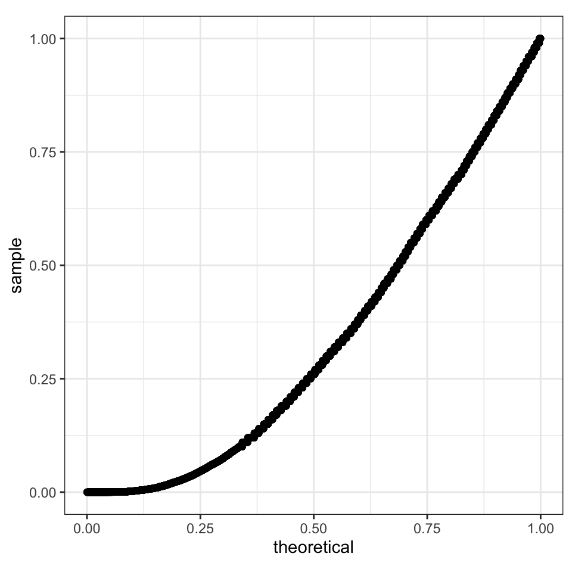
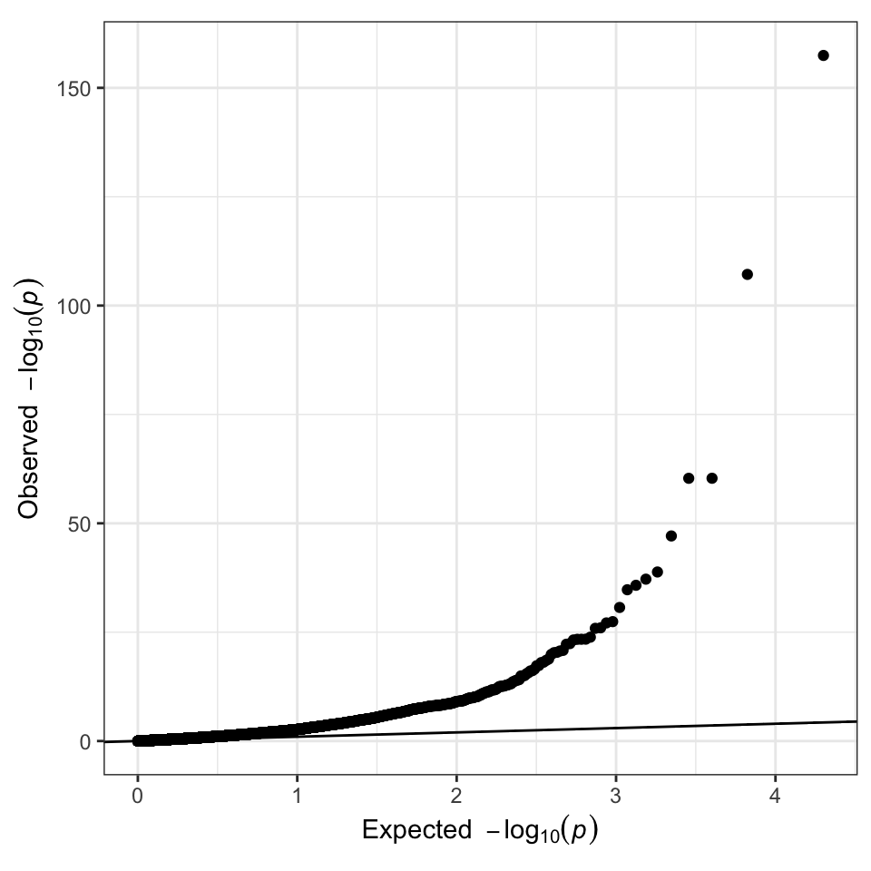
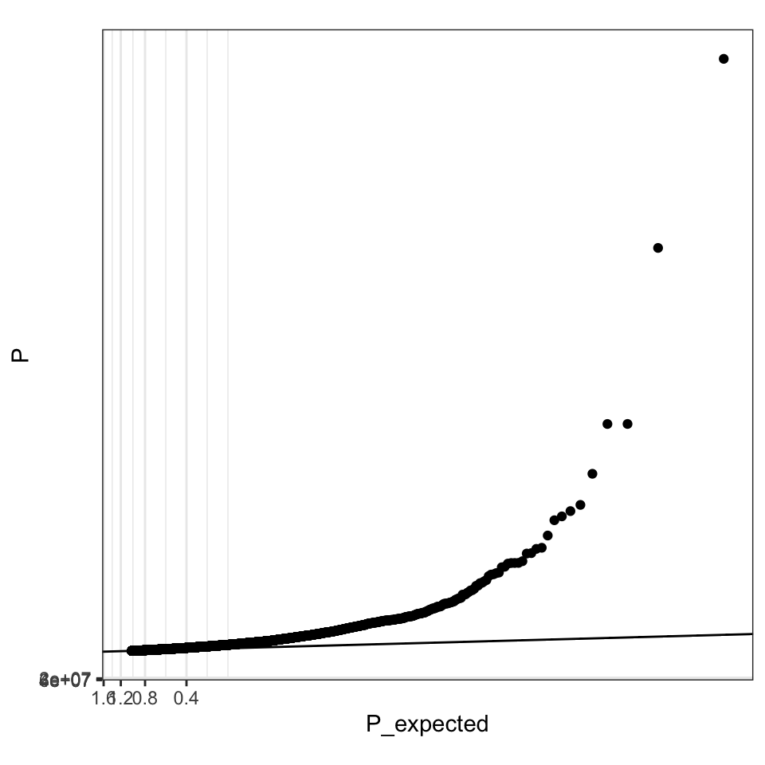
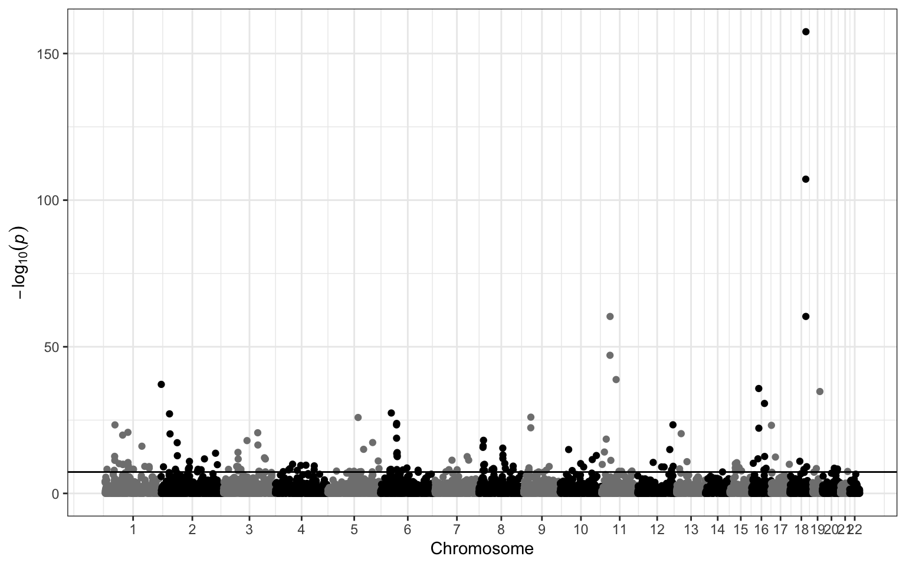

ggGWAS reasoning
Sina Rüeger
2019-07-31
gggwas-reasoning.RmdWhy bother with ggplot2 extension for GWAS summary statistic data visualisations?
This vignette lays out the motivation why having a ggplot2 extension is needed. But it also discusses existing alternatives and ways to create a ggplot2-like Q-Q plot and Manhattanplot.
GWAS data visualisations
There are two main data visualisations1 that are done after the GWAS is run2:
Q-Q plot: checks the deviation of the P-value distribution from the uniform distribution.
Manhattan plot: shows the P-value or summary statistic distribution along the chomosomal position.


By M. Kamran Ikram et al - Ikram MK et al (2010) Four Novel Loci (19q13, 6q24, 12q24, and 5q14) Influence the Microcirculation In Vivo. PLoS Genet. 2010 Oct 28;6(10):e1001184. doi:10.1371/journal.pgen.1001184.g001, CC BY 2.5, Link
Alternatives
Both plotting types can be applied in R with various functions. Just to name a few, here are some links which have also served as inspiration:
-
qqman: R package for GWAS results: http://www.gettinggeneticsdone.com/2014/05/qqman-r-package-for-qq-and-manhattan-plots-for-gwas-results.html -
ggman: R package with ggplot2 wrapper with some neat hacks https://github.com/mkanai/ggman - Recipe to create Manhattanplot in R with
qqman,ggplot2andplotly: https://www.r-graph-gallery.com/wp-content/uploads/2018/02/Manhattan_plot_in_R.html - Recipe for QQplots in
lattice(for historical reasons) https://genome.sph.umich.edu/wiki/Code_Sample:_Generating_QQ_Plots_in_R - Fast QQplot implementation in
ramwaspackage: https://rdrr.io/bioc/ramwas/man/qqplotFast.html - DYI
ggplot2Manhattan plots: https://github.com/pcgoddard/Burchardlab_Tutorials/wiki/GGplot2-Manhattan-Plot-Function -
ggbiopackage, a toolkit for genomic data (plotGrandLinearis an implementation for a Manhattan plot, usesGRangesobjects, ggplot2 wrapper): https://bioconductor.org/packages/release/bioc/html/ggbio.html -
ggman, wrapper (but no ggplot2 extension) for Manhattan plots: https://github.com/drveera/ggman - https://www.gettinggeneticsdone.com/2010/07/qq-plots-of-p-values-in-r-using-base.html
An often used package is qqman, that has a function for Q-Q plots qqman::qq and Manhattan plots qqman::manhattan.
And there are various ggplot2 wrappers (ggbio, ggman), but not actual extensions.
Reasons
The problem is two fold:
- GWAS summary statistics usually contains around 1 mio of rows, so plotting becomes a lengthy process.
- All existing packages use the base plotting functions, making it difficult to apply any functionalities that
ggplot2can (e.g. facetting, colouring).
The idea is therefore to create a ggplot2 extension that would facilitate all this: 1) fast plotting (through hexagons and filtering) and 2) building ggplot2 geoms and stats.
By writing a ggplot2 extension, we can inherit lots of the default ggplot2 functionalities and shorten the input.
Ways of making a ggplot2-like Q-Q plot plot
Let’s say we have GWAS summary statistics for a number of SNPs. We call this data gwas.summarystats: for a number of SNPs listed by row, we know the SNP identifier (SNP) and the P-value (P).
SNP P
rs3342 1e-2
rs83 1e-2
... ...For illustration purposes, we will use the summary statistics dataset GWAS.utils::giant.
library(GWAS.utils)
#skimr::skim(giant)
summary(giant)
#> CHR POS SNP Tested_Allele
#> Min. : 1.00 Min. : 220149 Length:10000 Length:10000
#> 1st Qu.: 4.00 1st Qu.: 33810156 Class :character Class :character
#> Median : 8.00 Median : 71004162 Mode :character Mode :character
#> Mean : 8.55 Mean : 79743155
#> 3rd Qu.:12.00 3rd Qu.:114753146
#> Max. :22.00 Max. :248476804
#> Other_Allele Freq_Tested_Allele_in_HRS BETA
#> Length:10000 Min. :0.01023 Min. :-4.980e-02
#> Class :character 1st Qu.:0.19750 1st Qu.:-2.800e-03
#> Mode :character Median :0.45710 Median :-1.000e-04
#> Mean :0.48108 Mean :-4.439e-05
#> 3rd Qu.:0.75913 3rd Qu.: 2.600e-03
#> Max. :0.98977 Max. : 4.480e-02
#> SE P N
#> Min. :0.001600 Min. :0.0000 Min. :498178
#> 1st Qu.:0.001800 1st Qu.:0.0460 1st Qu.:680198
#> Median :0.002100 Median :0.2600 Median :688732
#> Mean :0.002596 Mean :0.3406 Mean :683795
#> 3rd Qu.:0.002800 3rd Qu.:0.6000 3rd Qu.:691571
#> Max. :0.010600 Max. :1.0000 Max. :7955942. ggplot2::geom_qq
There is a geom_qq in ggplot2 that implements quantile-quantile plots. However, this is only useful, if we can transform the axes with -log10(). How to create custom made ggplot2 scales is explained here.
library(ggplot2)
theme_set(theme_bw())
## source:
(gg <- ggplot(data = giant) +
geom_qq(aes(sample = P), distribution = stats::qunif)) +
theme(aspect.ratio = 1)
# + scale_y_log10() + scale_x_log10()
# + coord_trans(x = "log10", y = "log10")
f_trans_mlog10 <- function(x) -log10(x)
f_trans_mlog10_inverse <- function(x) 10^(-x)
mlog10_trans <- scales::trans_new("-log10",
transform = f_trans_mlog10,
inverse = f_trans_mlog10_inverse)
gg +
scale_y_continuous(trans = mlog10_trans) +
scale_x_continuous(trans = mlog10_trans) +
geom_abline(intercept = 0, slope = 1) +
theme(aspect.ratio = 1)3. ggplot2::geom_point
N <- nrow(giant)
expected <- (1:N) / N - 1 / (2 * N)
giant <- giant %>% dplyr::arrange(P) %>% dplyr::mutate(P_expected = expected)
ggplot(data = giant) +
geom_point(aes(-log10(P_expected), -log10(P))) +
geom_abline(intercept = 0, slope = 1) +
theme(aspect.ratio = 1) +
xlab(expression(Expected ~ ~-log[10](italic(p)))) + ## from qqman::qq
ylab(expression(Observed ~ ~-log[10](italic(p)))) ## from qqman::qq
## or with the scale_y_continous feature
ggplot(data = giant) +
geom_point(aes(P_expected, P)) +
scale_y_continuous(trans = mlog10_trans) +
scale_x_continuous(trans = mlog10_trans) +
geom_abline(intercept = 0, slope = 1) +
theme(aspect.ratio = 1) #+ ## square shaped
4. ggGWAS::geom_gwas_qq
ggplot(data = giant) + geom_gwas_qq(aes(y = P))
Here is a whishlist of what a geom_gwas_qq function should be able to do:
- include correct labels (expected as x-label and observed as y-label)
- make sure color, group, facetting all works
- allow for the
rasterversion (for faster plotting), hexbins (also for faster plotting) and Pvalue thresholding (removing the high Pvalue SNPs from the plot) - if time: implement genomic inflation factor representation
- while we are at it: plotting box should be squared (
theme(aspect.ratio = 1))
Ways of making a ggplot2-like Manhattan plot
2. ggplot2::geom_point
## computing new x axis
giant <- giant %>% dplyr::arrange(CHR, POS) %>% dplyr::mutate(tmp = 1, cumsum.tmp = cumsum(tmp))
## calculating x axis location for chromosome label
med.dat <- giant %>% dplyr::group_by(CHR) %>% dplyr::summarise(median.x = median(cumsum.tmp))
ggplot(data = giant) +
geom_point(aes(x = cumsum.tmp, y = -log10(P), color = CHR %%2 == 0)) + ## create alternate coloring
geom_hline(yintercept = -log10(5e-8)) + ## add horizontal line
scale_x_continuous(breaks = med.dat$median.x, labels = med.dat$CHR) + ## add new x labels
guides(colour=FALSE) + ## remove legend
xlab("Chromosome") +
ylab(expression(-log[10](italic(p)))) + ## y label from qqman::qq
scale_color_manual(values = c(gray(0.5), gray(0))) ## instead of colors, go for gray
3. ggGWAS::geom_gwas_manhattan
ggplot(data = giant) + geom_gwas_manhattan(aes(pos = POS, chr = CHR, y = -log10(P)))
Here is a whishlist of what a geom_gwas_manhattan function should be able to do:
- x axis spacing with space between chromosome and spaced as with position
- include correct y axis labels
- make sure color, group, facetting all works
- allow for the
rasterversion (for faster plotting) and Pvalue thresholding (removing the high Pvalue SNPs from the plot) - implement coloring (two alternating colors)
Misc
Testing
How to test plots?
One option is, to compare ggplot2 object data. In the example below, we are comparing two ggplot2 outputs, one created with qplot and one with ggplot.
gg1 <- qplot(Sepal.Length, Petal.Length, data = iris)
gg2 <- ggplot(data = iris) + geom_point(aes(Sepal.Length, Petal.Length))
identical(gg1$data, gg2$data)We can apply this to our package by creating the qqplot and manhattanplots manually by hand, and then comparing the to the function outputs.
Another option is to use https://github.com/lionel-/vdiffr